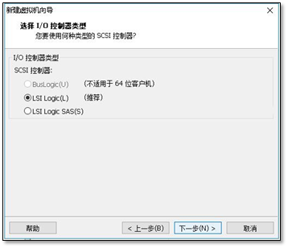
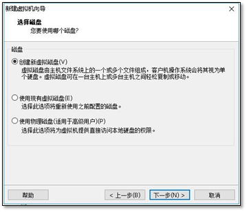
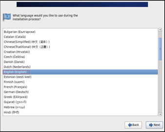
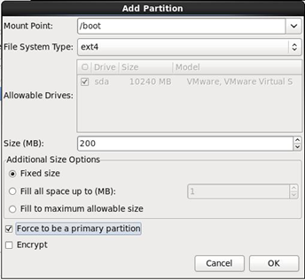
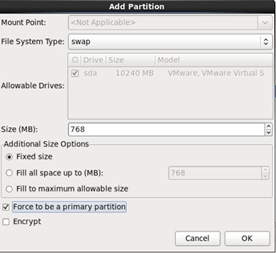
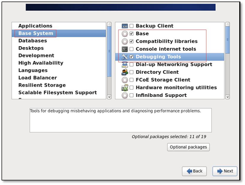

第1ç« è™šæ‹Ÿæœºå®‰è£…
1.1.1 新版本下载
http://mirrors.aliyun.com #阿里云官方镜�站点
1.1.2 旧版本下载
http://vault.centos.org/ #vault 电å�仓库
å°½é‡�使用ç§�å�文件下载，速度较快

1.2 VMware新建虚拟机
1.2.1 新建虚拟机
1.2.2 选择自定义
1.2.3 兼容性选择
兼容性选择默认��。
1.2.4 系统选择
选择��安装�作系统，直�使用镜�会自动安装。
选择centos 64 �系统。
1.2.5 虚拟机�置
1.2.6 cpuã€�内å˜
cpuä¸ªæ•°æ ¹æ�®éœ€è¦�设置。
内å˜å¤§å°�，在安装时内å˜ä¸�能少äº�1G。
1.2.7 网络
网络使用NAT
1.2.8 �盘
�盘类�选择默认的类�。

新创建一个虚拟�盘，�盘大�为10G。
将�盘拆分为多个文件。
使用默认的�盘文件�称。

1.2.9 创建�功
1.3 系统安装
1.3.1 挂载镜�
在VMwareä¸æ‰“开新建虚拟机，å�•æœºCD/DVD ,选择使用ISOæ˜ åƒ�文件。找到下载好的文件，确定。
1.3.2 安装
开机，选择第一个，安装系统。
Rescue installed system 救�系统。
检查完整性，选择跳过。
在安装系统时，如��幕看�到next �以使用F12.
1.3.3 è¯è¨€é€‰æ‹©
è¯è¨€é€‰æ‹©English，键盘模å¼�默认å�³å�¯ã€‚英文ä¸�ä¸æ–‡åœ¨å®‰è£…时会有差异。

1.3.4 储å˜ç±»å�‹
选择基础的储å˜æ–¹å¼�。
使用整�硬盘，并清除硬盘上的数�。
1.3.5 主机�称
æ ¹æ�®å®�际情况，设置主机å��称。注æ„�：主机å��支æŒ�的特殊å—符ä¸�多。
1.3.6 日期�时间
时间选择shanghai， �消勾选system clock uses UTC 。�则会出错。
1.3.7 用户密ç �
为了便äº�使用，密ç �为123456，该密ç �系统æ��示为弱密ç �，选择使用（use anyway）。
1.3.8 �盘分区
使用最�一项，自定义分区。
/boot 200M å˜æ”¾ç³»ç»Ÿçš„引导的信æ�¯
swap 768M 交æ�¢åˆ†åŒº 内å˜å¿«ç”¨å®Œä¹‹å‰�使用交æ�¢åˆ†åŒº 临时内å˜
如æ�œä½ 的内å˜æ˜¯8G以内的 交æ�¢åˆ†åŒºç»™å†…å˜çš„1.5å€�
如æ�œä½ 的内å˜æ˜¯8G以上的 交æ�¢åˆ†åŒºå°±ç»™8G
以å��内å˜ç»™512Må�³å�¯ï¼Œ768M
/ æ ¹åˆ†åŒº 剩下多少给多少
先建立/boot分区用äº�引导系统，建立swap äº¤äº’åˆ†åŒºï¼Œå°†å‰©ä½™ç©ºé—´åˆ†æ ¹ç›®å½•ã€‚

分区建立完æˆ�å��，弹出对è¯�框，是å�¦æ ¼å¼�化分区，å�•å‡»æ ¼å¼�化。
点击下一æ¥ï¼Œå°†ä¿®æ”¹çš„ä¿¡æ�¯å†™å…¥ç¡¬ç›˜ write changes to disk。
系统安装�置选择默认的�盘��。
1.3.9 安装版本
选择最�化安装-minimal----使用什么安装
在这里选择customize now ï¼ˆè‡ªå®šä¹‰ï¼‰ï¼Œæ·»åŠ å…¶ä»–çš„åŠŸèƒ½ã€‚

然å��就进入安装过程，ç¨�ç‰ä¸€æ®µæ—¶é—´å°±å®‰è£…完æˆ�，选择reboot é‡�å�¯è¿›å…¥ç³»ç»Ÿã€‚